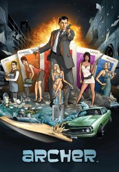

")
 
 IMDB-Wertung: 8.8 / 10
IMDB-Wertung: 8.8 / 10  Metascore:
Metascore: 
There's not a whole lot of intelligence in the office of the ISIS, an international spy agency where the employees' best efforts are geared toward undermining and betraying one another. Master spy Sterling Archer is a suave, confident secret-keeper at work but a mess when it comes to his personal affairs. He has a tenuous relationship with his ex, fellow agent Lana Kane, and he doesn't get along with his mother, who happens to be his boss. ISIS comptroller Cyril Figgis is jealous of Sterling's lifestyle despite the fact he's now dating Lana. Later, after ISIS is disbanded and the agents temporarily run a drug cartel to help fund their retirements, they return to their espionage roots as agents of the CIA. After arriving in Los Angeles, they organize a detective agency.
Jahr: 2009
Dauer: 20 Minuten
FSK:
Land: USA Studio: FX NetworkTonspuren: DD2.0 - ,
Untertitel:
Auflösung: 720p (1280x720) Größe: 128000 MB
Genre: Action, Komödie, Animation/Trick, TV-Serie
Regisseur: Bryan Fordney, Adam Reed
Drehbuch: Adrienne Shelly
Soundtrack:
Darsteller:
 Judy Greer als Cheryl Tunt
Judy Greer als Cheryl Tunt Chris Parnell als Cyril Figgis
Chris Parnell als Cyril Figgis Aisha Tyler als Lana Kane
Aisha Tyler als Lana Kane George Coe als Woodhouse
George Coe als Woodhouse Tom Kane als Woodhouse
Tom Kane als Woodhouse Christian Slater als Slater
Christian Slater als Slater Patton Oswalt als Alan Shapiro
Patton Oswalt als Alan Shapiro Gary Cole als Special Agent Hawley
Gary Cole als Special Agent Hawley Fred Armisen als Gustavo Calderon
Fred Armisen als Gustavo Calderon Keegan-Michael Key als Rim Shot
Keegan-Michael Key als Rim Shot Lauren Cohan als Juliana
Lauren Cohan als Juliana J.K. Simmons als Detective
J.K. Simmons als Detective Jeffrey Tambor als Len Trexler
Jeffrey Tambor als Len Trexler Carlos Alazraqui als Guard
Carlos Alazraqui als Guard Rene Auberjonois als Mannfred
Rene Auberjonois als Mannfred Thomas Lennon als Charles
Thomas Lennon als Charles David Cross als Noah
David Cross als Noah Patrick Warburton als Rip Riley
Patrick Warburton als Rip Riley Kat Cressida als Uta
Kat Cressida als Uta Shelly Desai als Krenshaw
Shelly Desai als Krenshaw Stephen Stanton als Capt. Lammers
Stephen Stanton als Capt. Lammers Fred Tatasciore als Donald Zissner
Fred Tatasciore als Donald Zissner Jon Hamm als Captain Murphy
Jon Hamm als Captain Murphy Ron Perlman als Ramon Limon
Ron Perlman als Ramon Limon Keith Szarabajka als Krenshaw
Keith Szarabajka als Krenshaw Kristen Schaal als Tiffy
Kristen Schaal als Tiffy George Takei als Mr. Moto
George Takei als Mr. Moto Nika Futterman als Barbie Zissner
Nika Futterman als Barbie Zissner Clarke Peters als Popeye
Clarke Peters als Popeye Peter Serafinowicz als Archer's Father
Peter Serafinowicz als Archer's Father James Hong als Bucky
James Hong als Bucky Bryan Cranston als Commander Tony Drake
Bryan Cranston als Commander Tony DrakeDatei: X:\HD-Trick\Archer\S01\Archer S01E01 Der Maulwurf.mkv seit 13.02.2017
Festplatte: Kinder-Filme+Trick
 Alle Filme aus Gruppe 'HD-Trick\Archer\S01'
Alle Filme aus Gruppe 'HD-Trick\Archer\S01'